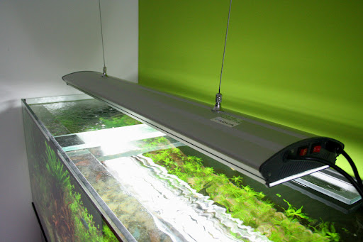
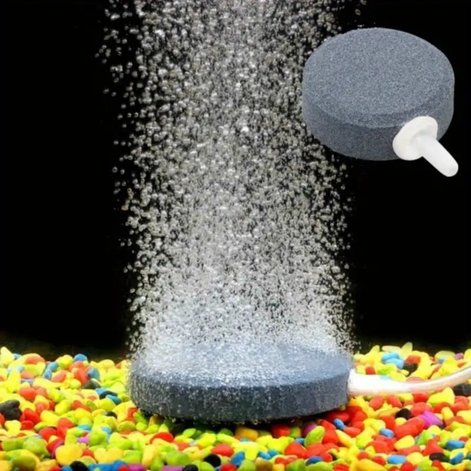
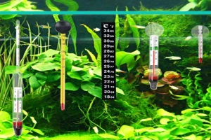
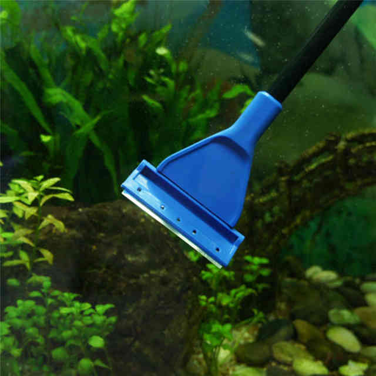
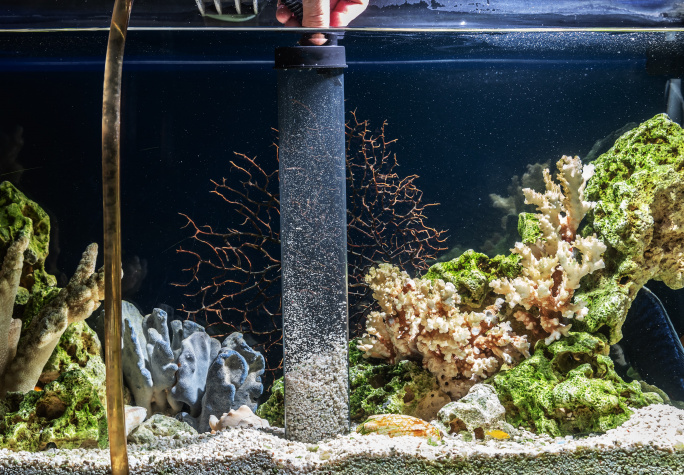
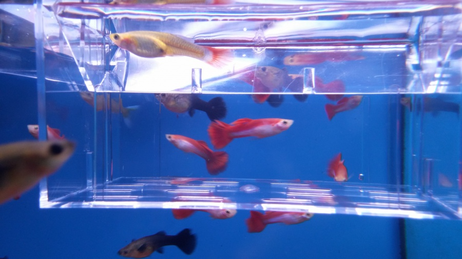

Filtr
slouží k čištění vody

Vzduchování
dodává kyslík do akvária

LED osvětlení
osvětlení akvária

Vzduchovací kámen
koncovka ke vzduchování, která se zahrabe pod substrát

Teploměr
měření teploty v akváriu

Škrabka na sklo
slouží k čištění skla při výskytu řas

Odkalovací zvon
Pomocí odk. zvonu čistíme dno akvária

Porodnička
oddělení samičky před porodem od zbytku akvária